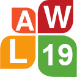

|  |
The 19th Linguistic Annotation Workshop Co-located with ACL 2025 in Vienna, Austria – July/Aug, 2025 |
Thursday, July 31, 2025 | |
| 8:45–9:00 | Welcome |
| 9:00–9:45 | Keynote 1(Session chair: Ines Rehbein) |
| Data Annotation in the Era of LLMs - Thoughts and Good Practices (slides: pdf) Rotem Dror, Haifa University | |
| 09:45–10:30 | Oral Session 1: Disagreement and ambiguity in highly subjective tasks (Session chair: Lauren Levine) |
| 09:45–10:00 | Understanding Disagreement: An Annotation Study of Sentiment and Emotional Language in Environmental Communication (slides: pdf) Christina Barz, Melanie Siegel, Daniel Hanss and Michael Wiegand |
| 10:00–10:15 | Measuring Label Ambiguity in Subjective Tasks using Predictive Uncertainty Estimation (slides: pdf) Richard Alies, Elena Merdjanovska and Alan Akbik |
| 10:15–10:30 | Disagreements in analyses of rhetorical text structure: A new dataset and first analyses (slides: pdf) Freya Hewett and Manfred Stede |
| 10:30–11:00 | Coffee |
| 11:00–11:30 | Oral Session 2: Subjectivity in linguistic annotation (Session chair: Federica Gamba) |
| 11:00–11:15 | Subjectivity in the Annotation of Bridging Anaphora (slides: pdf) Lauren Levine and Amir Zeldes |
| 11:15–11:30 | The revision of linguistic annotation in the Universal Dependencies framework: a look at the annotators’ behavior (slides: pdf) Magali Sanches Duran, Lucelene Lopes and Thiago Alexandre Salgueiro Pardo |
| 11:30–12:30 | Poster Session 1 |
| Forbidden FRUIT is the Sweetest: An Annotated Tweets Corpus for French Unfrozen Idioms Identification Julien Bezançon, Gaël Lejeune, Antoine Gautier, Marceau Hernandez and Félix Alié | |
| Another Approach to Agreement Measurement and Prediction with Emotion Annotations Quanqi Du and Veronique Hoste | |
| Harmonizing Divergent Lemmatization and Part-of-Speech Tagging Practices for Latin Participles through the LiLa Knowledge Base Marco Passarotti, Federica Iurescia and Paolo Ruffolo | |
| UD-KSL Treebank v1.3: A semi-automated framework for aligning XPOS-extracted units with UPOS tags Hakyung Sung, Gyu-Ho Shin, Chanyoung Lee, You Kyung Sung and Boo Kyung Jung | |
| Bootstrapping UMRs from Universal Dependencies for Scalable Multilingual Annotation Federica Gamba, Alexis Palmer and Daniel Zeman | |
| Classifying TEI Encoding for DutchDraCor with Transformer Models Florian Debaene and Veronique Hoste | |
| Label Bias in Symbolic Representation of Meaning Marie Mikulová, Jan Štěpánek and Jan Hajič | |
| An Annotation Protocol for Diachronic Evaluation of Semantic Drift in Disability Sources Nitisha Jain, Chiara Di Bonaventura, Albert Merono Penuela and Barbara McGillivray | |
| Pre-annotation Matters: A Comparative Study on POS and Dependency Annotation for an Alsatian Dialect Delphine Bernhard, Nathanaël Beiner and Barbara Hoff | |
| Where it’s at: Annotating Verb Placement Types in Learner Language Josef Ruppenhofer, Annette Annette Portmann, Christine Renker, Matthias Schwendemann, Katrin Wisniewski and Torsten Zesch | |
| ICLE-RC: International Corpus of Learner English for Relative Clauses Debopam Das, Izabela Czerniak and Peter Bourgonje | |
| ExpLay: A new corpus resource for the research on expertise as an influential factor on language production Carmen Schacht and Renate Delucchi Danhier | |
| A Rose by Any Other Name: LLM-Generated Explanations Are Good Proxies for Human Explanations to Collect Label Distributions on NLI (ACL findings) Beiduo Chen, Siyao Peng, Anna Korhonen, and Barbara Plank | |
| Pragmatics in the Era of Large Language Models: A Survey on Datasets, Evaluation, Opportunities and Challenges (ACL main) Bolei Ma, Yuting Li, Wei Zhou, Ziwei Gong, Yang Janet Liu, Katja Jasinskaja, Annemarie Friedrich, Julia Hirschberg, Frauke Kreuter, Barbara Plank | |
| 12:30–14:00 | Lunch |
| 14:00–15:00 | Poster Session 2 |
| Towards Resource-Rich Mizo and Khasi in NLP: Resource Development, Synthetic Data Generation and Model Building Soumyadip Ghosh, Henry Lalsiam, Dorothy Marbaniang, Gracious Mary Temsen, Rahul Mishra and Parameswari Krishnamurthy | |
| Creating Hierarchical Relations in a Multilingual Event-type Ontology Zdeňka Urešová, Eva Fučíková and Jan Hajič | |
| Visual Representations of Temporal Relations between Events and Time Expressions in News Stories Evelin Amorim, António Leal, Nana Yu, Purificação Moura Silvano and Alipio Mario Jorge | |
| Annotating candy speech in German YouTube comments Yulia Clausen and Tatjana Scheffler | |
| Variety delights (sometimes) - Annotation differences in morphologically annotated corpora Andrea Dömötör, Balázs Indig and Dávid Márk Nemeskey | |
| Addressing Variability in Interlinear Glossed Texts with Linguistic Linked Data Maxim Ionov and Natalia Patiño Mazzotti | |
| Illuminating Logical Fallacies with the CAMPFIRE Corpus Austin Blodgett, Claire Bonial, Taylor A. Pellegrin, Melissa Torgbi and Harish Tayyar Madabushi | |
| Cheap Annotation of Complex Information: A Study on the Annotation of Information Status in German TEDx Talks Carmen Schacht, Tobias Nischk, Oleksandra Yazdanfar and Stefanie Dipper | |
| Annotating Spatial Descriptions in Literary and Non-Literary Text Emilie Sitter, Omar Momen, Florian Steig, J. Berenike Herrmann and Sina Zarrieß | |
| A GitHub-based Workflow for Annotated Resource Development Brandon Waldon and Nathan Schneider | |
| Enhancing an Annotation Scheme for Clinical Narratives in Portuguese through Human Variation Analysis Ana Luisa Fernandes, Purificação Silvano, António Leal, Nuno Guimarães, Rita Rb-Silva, Luís Filipe Cunha and Alípio Jorge | |
| iNews: A Multimodal Dataset for Modeling Personalized Affective Responses to News (ACL main) Tiancheng Hu and Nigel Collier | |
| 15:00–15:30 | Oral Session 3: Datasets (Session Chair: Julien Bezançon) |
| 15:00–15:15 | Expanding the UNSC Conflicts Corpus by Incorporating Domain Expert Annotations and LLM Experiments (slides: pdf) Karolina Zaczynska |
| 15:15–15:30 | Guidelines for Fine-grained Sentence-level Arabic Readability Annotation (slides: pdf) Nizar Habash, Hanada Taha-Thomure, Khalid Elmadani, Zeina Zeino and Abdallah Abushmaes |
| 15:30–16:00 | Coffee |
| 16:00–16:45 | Keynote 2 (Session chair: Siyao Logan Peng) |
| Engaging experts and LLMs in corpora development (slides: pdf) Junyi Jessy Li, University of Texas at Austin | |
| 16:45–17:00 | Wrap-up |